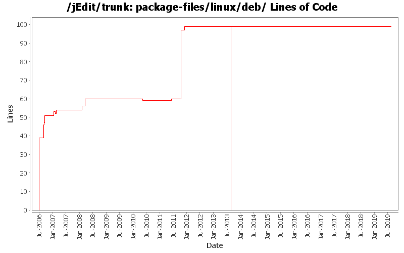

[root]/package-files/linux/deb

| Author | Changes | Lines of Code | Lines per Change |
|---|---|---|---|
| Totals | 61 (100.0%) | 313 (100.0%) | 5.1 |
| Vampire0 | 34 (55.7%) | 192 (61.3%) | 5.6 |
| ezust | 24 (39.3%) | 111 (35.5%) | 4.6 |
| blueyed | 3 (4.9%) | 10 (3.2%) | 3.3 |
Fix Linux desktop manager integration without using reflection
1 lines of code changed in 1 file:
Add missing Java 11 changes
0 lines of code changed in 2 files:
hopefully finish switch from Java 1.7 to Java 1.8
0 lines of code changed in 1 file:
Java 1.8
6 lines of code changed in 1 file:
reinstantiate trunk and branches
99 lines of code changed in 6 files:
put tombstone in place, official repository for jEdit core is now in Git
0 lines of code changed in 6 files:
Fix the integration with Unity and other Linux Desktop Environments, broken by Patch #3582760
1 lines of code changed in 1 file:
debian control
3 lines of code changed in 1 file:
s/4/5 for version
2 lines of code changed in 2 files:
There is no more sun-java6. Now the choices are default-java or openjdk-6.
Updating debian files to reflect that.
0 lines of code changed in 2 files:
Updated description of Packages to match control.
5 lines of code changed in 1 file:
apply downstream patch from https://code.launchpad.net/~mborn319/ubuntu/precise/jedit/add_keywords/+merge/96188 that adds searchable keywords to linux .desktop files
0 lines of code changed in 1 file:
jEdit now has more than 200 syntax highlighting languages.
Changelog fixes.
5 lines of code changed in 1 file:
3404087 - Include a desktop file.
2 lines of code changed in 1 file:
Debian repository metadata is now generated during normal build procedure
37 lines of code changed in 1 file:
Improve integration with Unity Launcher. Without this change if you pin jEdit to the Launcher and then run it, a separate icon for the running instance is shown. With this change this is correctly merged with the pinned starter.
1 lines of code changed in 1 file:
Got rid of 1.5 references.
3 lines of code changed in 1 file:
fix for bug #2999456
Removed the duplicated Architecture line from the Debian control file.
6 lines of code changed in 1 file:
package-files: Update email addresses: use devel ML instead of non-existing devel at j.o.
1 lines of code changed in 1 file:
Add Catalan and Spanish translations to jedit.desktop (from Ubuntu)
4 lines of code changed in 1 file:
Fix desktop file:
- warning: key "Encoding" in group "Desktop Entry" is deprecated: Removed
- warning: value "Application;Development;" for key "Categories" in group "Desktop Entry" contains a deprecated value "Application": use "Development;TextEditor;"
- Comment => GenericName
- Add german translation
TODO: Icon should only be "jedit", to support overriding (see http://freedesktop.org/wiki/Standards/icon-theme-spec)
5 lines of code changed in 1 file:
[ 1782091 ] An interface for dockable windows
1 lines of code changed in 1 file:
Reverting back to build.number... That numbering scheme
works better for sorting.
1 lines of code changed in 1 file:
s/5/6 and also changed jedit.build.number to jedit.version as per suggestion in 1649674
2 lines of code changed in 1 file:
Fixed dependencies as per 1649674.
2 lines of code changed in 1 file:
Added build-depends.
3 lines of code changed in 1 file:
Got rid of Depends, changed to Suggests.
7 lines of code changed in 1 file:
Changing dependency to java-package. I hope that's the right one to use.
1 lines of code changed in 1 file:
Updating deb control file...
3 lines of code changed in 1 file:
7 lines of code changed in 1 file:
Reformatted description, added a proper depends and section.
23 lines of code changed in 1 file:
Fixed precedence of Recent Files List caretposition over commanline supplied caret position
1 lines of code changed in 1 file:
s/consoles/shells
0 lines of code changed in 1 file:
a test of changed property
5 lines of code changed in 5 files:
Some cleanup and fix
2 lines of code changed in 2 files:
Added "news43/news.xml".
11 lines of code changed in 1 file:
EditAction changes + some JDK 1.5 collection updates.
9 lines of code changed in 1 file:
Updated the text in some of the .deb distribution files...
15 lines of code changed in 1 file:
- Great rewrite of build.xml with many additions like automated building of various distribution files
- moved build-support to core
- made the standard plugins use build-support
39 lines of code changed in 5 files: